简介
在前一章中，我们了解了线性回归模型以及输入变量(自变量)和目标变量(因变量或解释变量)之间的线性关系。如果一个变量作为自变量，定义为简单线性回归。如果使用一个以上的解释(独立)变量，它被称为多元线性回归。
回归算法和问题是基于预测一个数字目标变量(通常称为因变量)，给定所有输入变量(通常称为自变量变量)，例如，基于位置、面积、与购物中心的距离和许多其他因素预测房价。回归的许多概念都来源于统计学。
整个机器学习领域现在是数学、统计学和计算机科学的恰当平衡。在本章中，我们将使用回归技术来理解如何在输入和目标变量之间建立关系。我们还将强调模型诊断，因为回归充满了假设，需要在模型用于现实世界之前对其进行检查。
本质上，所有的模型都是错的，但有些是有用的。–乔治·博克斯
在第 3 章、监督学习简介中，我们已经简要介绍了简单线性回归和多元线性回归。在本章中，我们将更多地关注模型诊断和其他类型的回归算法，以及它与线性回归有何不同。
线性回归
让我们重温一下第三章、监督学习简介中的多元线性回归。以下方程是线性方程或线性预测函数的数学表示，带有p解释变量和n观测值:
其中每个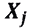是列值(解释变量)的向量，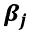是未知参数或系数。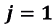，使得这个方程适合简单的线性回归。有许多算法可以将这个函数拟合到数据上。最流行的是普通最小二乘法 ( OLS )。
在了解 OLS 的细节之前，首先让我们解释一下我们在试图拟合北京 PM2.5 数据时得到的方程，这些数据来自第 3 章、监督学习简介的简单和多元线性回归的模型构建部分。
如果我们从lm()函数的输出中代入回归系数、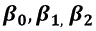和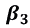的值，我们得到:
前面的等式试图回答“因素DEWP、TEMP和Iws对预测pm2.5水平重要吗？”
该模型估计平均而言，DEWP、TEMP和Iws值如何影响pm2.5水平。例如，DEWP的单位增加将使pm2.5值增加4.384196。这就是为什么我们经常称这些系数为权重。重要的是要注意，如果 R 平方值很低，这些估计的系数是不可靠的。
练习 50:使用 multiple_PM_25_linear_model 对象打印系数和残差值
在本练习中，我们将使用multiple_PM25_linear_model对象打印系数和残差值。
执行以下步骤来完成练习:
- Extract the attribute coefficients using the
$operator on themultiple_PM25_linear_modelobject:multiple_PM25_linear_model$coefficients
输出如下所示:
(Intercept) DEWP TEMP Iws 161.1512066 4.3841960 -5.1335111 -0.2743375
- 使用
multiple_PM25_linear_model对象上的$操作符提取属性残差:multiple_PM25_linear_model$residuals
输出如下所示:
25 26 27 28
17.95294914 32.81291348 21.38677872 26.34105878
29 30 31 32
活动 7:使用模型对象打印各种属性，不使用汇总功能
在第三章、监督学习介绍的多元线性回归模型部分，我们创建了一个多元线性回归模型，并使用模型对象将其存储在模型对象multiple_PM25_linear_model中。
这个活动将有助于理解在模型建立后如何提取一些重要的模型属性。在少数情况下，我们将使用$操作符，在其他情况下，我们将执行一些简单的计算。使用multiple_PM25_linear_model对象打印以下模型属性:
- 残差
- 拟合值
- r-s 平方值
- f 统计量
- 系数 p 值
让我们使用模型对象打印这些值:
- 首先，打印系数值。使用
coefficients选项确保输出类似于summary功能的输出。系数是来自使用 OLS 算法的模型的拟合值:(Intercept) DEWP TEMP Iws 161.1512066 4.3841960 -5.1335111 -0.2743375
- 求 PM2.5 的预测值和实际值的残差(差值)，要尽可能小。残差反映了使用系数拟合的值与实际值有多远:
25 26 27 28 17.95294914 32.81291348 21.38677872 26.34105878 29 30 31 32 - 接下来，找到拟合值，该值应该更接近最佳模型的实际 PM2.5 值。使用这些系数，我们可以计算拟合值:
25 26 27 28 29 111.047051 115.187087 137.613221 154.658941 154.414781 30 31 32 33 34 - Find the R-Squared values. They should look the same as the ones you obtained in the output of the
summaryfunction next to the multiple R-squared text. R-square helps in evaluating the model performance. If the value is closer to 1, the better the model is:summary(multiple_PM25_linear_model)$r.squared
输出如下所示:
[1] 0.2159579
- 求 F 统计值。确保输出看起来与文本 F statistics 旁边的
summary函数的输出相同。这将告诉你你的模型是否比仅仅使用目标变量的平均值更合适。在许多实际应用中，F 统计量与 p 值一起使用:value numdf dendf 3833.506 3.000 41753.000
- Finally, find the coefficient p-values and make sure the values look the same as the one you obtained in the output of the
summaryfunction under coefficients for each variable. It will be present under the column titledPr(>|t|):. If the value is less than 0.05, the variable is statistically significant in predicting the target variable:(Intercept) DEWP TEMP Iws 0.000000e+00 0.000000e+00 0.000000e+00 4.279601e-224
注意
这项活动的解决方案可在第 449 页找到。
普通最小二乘法 ( OLS )
在第 3 章、监督学习简介中，我们看到残差平方和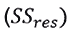(也称为误差平方和的或残差平方和)，它是整体模型拟合的度量，由以下等式给出:
其中 T 表示矩阵转置， X 的行表示与目标变量的一个特定值相关的所有输入变量的值为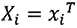。使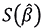最小化的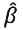的值被称为β的 OLS 估计器。OLS 算法被设计成找到将最小化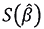的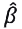的全局最小值。
从上一章中，您还了解到北京 PM2.5 数据集上multiple_PM25_linear_model的 R 平方值非常低，因此该模型在实际应用中很有用。解释糟糕结果的一种方式是说预测变量DEWP和TEMP不能完全解释 PM2.5 的变化，所以它们不能产生好的结果。
在我们进入这个模型的诊断之前，让我们看看我们是否可以使用变量month(读数)解释 PM2.5 中的一些变化。我们还将在lm()函数中使用一个交互变量(在改进模型一节中对此有更多介绍)DEWP *温度*月份，该函数生成DEWP、TEMP和month的所有可能组合。
使用month的原因由第 3 章、监督学习介绍中的图 3.3 来证明，其中我们看到了TEMP、DEWP和PRES的值中的季节效应(显示了一个漂亮的正弦模式)。以下练习的输出显示了为解释 PM2.5 数据集而创建的所有交互术语。
注意
像DEWP:TEMP这样的表达式意味着乘法，month的每个值在multiple_PM25_linear_model,中都是一个独立的变量，因为我们在运行模型之前将month转换成了factor。
练习 51:在 lm()函数中添加交互项 DEWP:温度:月份
在本练习中，我们将添加交互项来提高模型性能。
我们将看到增加一个额外的相互作用项如何帮助提高模型在 R 平方值方面的性能。执行以下步骤来完成练习:
- 使用以下命令读取北京 PM2.5 数据集:
PM25 <- read.csv("PRSA_data_2010.1.1-2014.12.31.csv") - 现在，将
month对象转换成factor变量，如下所示:PM25$month <- as.factor(PM25$month)
- 使用带有交互项
DEWP、TEMP和month的线性模型。观察术语DEWP*TEMP*month，它将产生变量DEWP、TEMP和month:multiple_PM25_linear_model <- lm(pm2.5 ~ Iws + DEWP*TEMP*month, data = PM25)
的所有组合 - Print the summary of the model to see the changes in coefficients and r-squared values because of the interaction term:
summary(multiple_PM25_linear_model)
输出如下所示:
## Call: ## lm(formula = pm2.5 ~ Iws + DEWP * TEMP * month, data = PM25) ## ## Residuals: ## Min 1Q Median 3Q Max ## -298.41 -42.77 -9.35 30.91 967.39 ## ## Coefficients: ## Estimate Std. Error t value Pr(>|t|) ... ## (Intercept) 2.917e+02 4.338e+00 67.257 < 2e-16 *** ## Signif. codes: 0 '***' 0.001 '**' 0.01 '*' 0.05 '.' 0.1 ' ' 1 ## ## Residual standard error: 70.04 on 41708 degrees of freedom ## (2067 observations deleted due to missingness) ## Multiple R-squared: 0.4217, Adjusted R-squared: 0.4211 ## F-statistic: 633.7 on 48 and 41708 DF, p-value: < 2.2e-16
请注意，R 平方值从 0.216 到 0.4217 增加了两倍。然而，这样的跳跃是以模型可解释性为代价的。虽然用单个变量来解释模型的解释力很简单，但它们的相乘会产生一种难以表达的效果。
在我们的北京 PM2.5 的例子中，更符合逻辑的是考虑DEWP和TEMP与year对象的month对象的相互作用，因为这两者都是随季节变化的环境因素。
然而，我们还想进行一些诊断，以充分了解如何端到端地研究线性回归模型，而不仅仅是查看 R 平方值。
模型诊断
通常，线性回归和逻辑回归等统计模型带有许多假设，需要在接受最终解决方案之前进行验证。违反假设的模型会导致错误的预测，结果也容易被误解。
以下代码显示了从lm()方法的输出中获取诊断图的方法。该图有四个不同的图来查看残差。我们来了解一下如何解读每一个情节。所有这些图都是关于拟合与回归假设的匹配程度。如果有违反，它将清楚地显示在以下代码的图形中:
par(mfrow = c(2,2)) plot(multiple_PM25_linear_model)
输出如下所示:
图 4.1:北京 PM2.5 数据集线性模型拟合的诊断图
在接下来的四个部分中，我们将利用从一个线性方程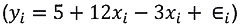和一个二次方程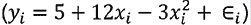中随机生成的数据来探究每一个图，稍后再回来解释图 4.1 中的四个图与理想场景相比表现如何。
注意
二次方程中， 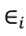假设正态分布，均值为 0，方差为 2。
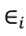假设正态分布，均值为 0，方差为 2。
在以下练习中，我们将使用线性和二次方程生成地块。稍后，我们将深入了解线性模型应遵循的各种假设，使用模型拟合通过两个方程生成的随机数据。
练习 52:使用线性和二次方程生成和拟合模型
在本练习中，我们将了解线性和多项式函数，以及在两者上拟合线性模型时会发生什么。
使用线性和多项式方程生成随机数，并在两者上拟合线性模型。观察两个图之间的差异。
执行以下步骤生成所需的图:
- 首先，使用下面的代码定义线性函数:
linear_function <- function(x){return (5+(12*x)-(3*x))} - 定义如下命令所示的二次函数:
quadratic_function <- function(x){return (5+(12*x)-(3*(x^2)))} - 现在，生成均匀随机数(
x)，如下所示:uniform_random_x <- runif(50, min=0, max=15)
- 使用(
x)生成线性值(y)，如下所示:linear_values_y <- linear_function(uniform_random_x) + rnorm(50,mean = 0, sd =sqrt(2))
- 使用
x:quadratic_values_y <- quadractic_function(uniform_random_x) + rnorm(50,mean = 0, sd =sqrt(2)) df <- data.frame(linear_values_y, quadratic_values_y, uniform_random_x)
生成二次值(y) - 使用
uniform_random_x:model_df_linear <- lm(linear_values_y ~ uniform_random_x, data = df)
拟合linear_values_y的线性模型 - Plot the diagnostic plot fora linear relationship:
par(mfrow = c(2,2)) plot(model_df_linear)
剧情如下:
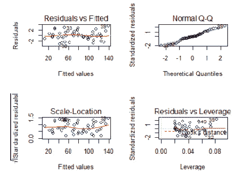图 4.2:使用线性回归的图
- 使用
uniform_random_x:model_df_quad <- lm(quadratic_values_y ~ uniform_random_x, data = df)
拟合quadratic_values_y的线性模型 - Generate a diagnostic for non-linear relationships:
par(mfrow = c(2,2)) plot(model_df_quad)
输出如下所示:
图 4.3:使用二次回归的图
步骤 7 和 9 中的曲线之间的差异显示了线性关系的良好和不良拟合。线性模型无法拟合 y 和 x 之间的非线性关系。在接下来的部分中，我们将深入理解步骤 7 和 9 中生成的图的四个部分。
在第 3 章、监督学习简介、图 3.5 中，我们讨论了建立线性回归模型时要考虑的各种假设。通过本章前面提到的四个情节，我们将检查是否违反了任何假设。
残差与拟合图
这种类型的图介于拟合值和残差之间(方法lm()之间的差异)。如果预测变量和目标变量具有非线性关系，该图将帮助我们识别。
在下图中，顶部的图显示了分散在四周的点，并且清晰地捕捉到了预测值和目标变量之间的线性关系。在下图中，无法解释的非线性关系被排除在残差之外，因此曲线也是如此。底部的图清楚地表明它不适合线性回归模型，违反了预测值和目标变量之间的线性关系:
图 4.4:[顶部]线性函数的残差与拟合图。[底部]二次函数的残差与拟合图
正常 Q-Q 图
Q-Q 图，也称为分位数-分位数图，支持检查数据是否可信地来自近似理论分布；在这个实例中，正态分布。Q-Q 图是一种散点图，通过绘制两组相互对比的分位数(低于某一比例的数据的点)来形成。如果两组分位数来自相似的分布，我们必须看到这些点形成一条粗略的直线。提供一个数据向量，正态 Q-Q 图按排序顺序绘制数据与标准正态分布的分位数。
线性回归的第二个假设是所有的预测变量都是正态分布的。如果为真，残差也将是正态分布。正常 Q-Q 是标准化残差和理论分位数之间的图。从视觉上，我们可以检查残差是否遵循直线，是否是正态分布，或者是否有任何偏差表明违规。
在下图中，顶部演示了线性函数，该函数显示了与直对角线的对齐，只有少数例外，如观测值 39、30 和 50。另一方面，该图的底部显示了二次函数，令人惊讶地显示了与直线的良好对齐，不完全像线性，因为在图的右上角可以看到一些发散:
图 4.5:[上]线性函数的正常 Q-Q 图。[底部]二次函数的正常 Q-Q 图
比例尺-位置图
比例位置图显示残差是否沿输入变量(预测值)的范围均匀分布。等方差假设(同方差)也可以用该图来检验。如果我们看到一条水平线，上面有随机散布的点，这意味着模型是好的。
该图位于拟合值和标准化残差的平方根之间。在下图中，顶部的图显示了线性函数，残差沿水平线随机分布，而在底部的图中，似乎有一个非随机的模式。因此，方差不相等:
图 4.6:[顶部]线性函数的刻度位置图。[底部]二次函数的刻度位置图
剩余与杠杆
如果数据中有任何有影响的点，那么残差对杠杆图有助于识别它。大家普遍认为所有的离群点都是有影响的，也就是决定了回归线怎么出来。然而，并不是所有的离群点都是有影响的点。即使某个点在合理的值范围内(不是异常值)，它仍然可能是一个有影响的点。
在下一张图中，我们将寻找右上角或右下角的偏离值。与回归线相比，这些区域是观察可能有影响的空间。在图 4.7 中，红色虚线的观测值与高40和39在虚线之外(高库克距离)。请注意，这些观察结果也持续出现在其他三个图中，如果我们希望看到数据中的线性关系，这给了我们消除这些点的有力理由。顶部的图似乎没有红色虚线，确定了一个很好的拟合:
图 4.7:[顶部]线性函数的剩余与杠杆图。[底部]二次函数的残差与杠杆图
现在，如果我们重温图 4.1 ，我们从北京 PM2.5 数据集获得的诊断图；看起来模型拟合不是用于实际目的的最佳。所有四个图都显示出轻微违反线性、正态性和同方差假设。
在下一节中，我们列出了一些改进模型的方法，这些方法可能有助于逐步增加 R 平方值，并更好地拟合数据。此外，与我们刚刚讨论的目测方法类似，可以使用许多统计方法，例如用于检验正态性的 Kolmogorov-Smirnov 检验、用于检验多重共线性的相关性、用于检验同质性的Goldfeld–Quandt 检验。
改进模型
到目前为止，我们已经看到了数据中的问题，但您可能会问是否可以修复或改进它。让我们讨论一些方法来做到这一点。在本节中，您将学习一些方法，如变量转换、处理异常点、添加交互效应以及决定采用非线性模型。
转换预测值或目标变量
改进模型最常见的方法是使用log函数转换一个或多个变量(也可能是目标变量)。
对数变换纠正了偏斜的分布。它提供了处理数据偏斜的能力，同时，一旦建立了模型，就可以很容易地计算出原始值。最流行的日志转换是自然的日志。关于对数变换更详细的解释可以在第六章、特征选择和降维的对数变换一节中找到。
目标是通过转换使数据呈正态分布。因此，无论哪个功能有助于实现这一点，都是一个好的转换。在对数之后，平方根也被广泛使用。查看变换变量的分布，看是否得到对称分布(钟形)；如果是的话，那么这个转换将是有用的。
选择非线性模型
可能会遇到线性模型不适合的情况，因为预测值和目标变量之间存在非线性关系，只有非线性函数才能适合此类数据。参见本章后面的多项式回归一节，了解关于这种模型的更多细节。
去除异常值或有影响的点
正如我们在残差与杠杆部分的诊断图中所讨论的，我们可能会发现一个异常值或有影响力的点在为我们获取最佳模型的过程中发挥了破坏作用。如果你已经正确地识别了它，试着通过移除观察来看，看看事情是否有所改善。
添加交互效果
我们有时可能会看到数据集中两个或更多预测(独立)变量的值以倍增的方式影响因变量。带有交互项的线性回归方程可能如下所示:
人们可以选择这种相互作用的高阶(例如，使用三个变量)；然而，这些很难解释，通常是避免的。
分位数回归
当数据呈现异常值、高偏斜度和导致异方差的条件时，我们采用分位数回归进行建模。此外，分位数回归回答了一个线性回归无法回答的关键问题，即“对于高 PM2.5 和平均 PM2.5，DEWP、TEMP和Iws对 PM2.5 水平的影响是否不同？”
分位数回归与线性回归非常相似；然而，分位数回归参数估计由输入predictor变量的单位变化产生的response变量的某个分位数的变化。为了充分理解这种说法，让我们使用分位数回归(不使用交互项)来拟合我们的北京数据。
我们需要安装quantreg包来将分位数回归拟合到数据中。该包提供了使用参数tau拟合数据的方法rq()，该参数是指定用于将模型拟合到数据中的分位数值的模型参数。注意到rq()方法参数的其他部分看起来与lm()相似。
练习 53:对北京 PM2.5 数据集进行分位数回归拟合
在本练习中，我们将观察不同分位数的分位数回归拟合的差异，特别是第 25、50 和 75 分位数。来自quantreg的rq()函数将用于建立模型。在图 4.8 中，我们将比较通过lm()函数和rq()函数获得的系数值，以比较两种类型的回归。
执行以下步骤来完成练习:
- 使用以下命令读取北京 PM2.5 数据集:
PM25 <- read.csv("PRSA_data_2010.1.1-2014.12.31.csv") - 现在，下一步是安装所需的包。使用以下命令加载
quantreg包:library(quantreg)
- 将分位数回归τ值设为 0.25、0.5 和 0.75，分别对应于第 25、50 和 75 个分位数:
quantile_regression_PM25_all <- rq(pm2.5 ~ DEWP+TEMP+Iws, data = PM25, tau = seq(0.25,0.99,by = 0.25))
- Print the summary of the quantile regression model:
summary(quantile_regression_PM25_all)
输出如下所示:
## tau: [1] 0.25 ## ## Coefficients: ## Value Std. Error t value Pr(>|t|) ## (Intercept) 63.62367 0.52894 120.28453 0.00000 ## DEWP 2.08932 0.01859 112.39914 0.00000 ## TEMP -1.89485 0.02196 -86.27611 0.00000 ## Iws -0.09590 0.00179 -53.59211 0.00000 ## ## tau: [1] 0.5 ## ## Coefficients: ## Value Std. Error t value Pr(>|t|) ## (Intercept) 117.37344 0.73885 158.85921 0.00000 ## DEWP 3.43276 0.02835 121.07849 0.00000 ## TEMP -3.37448 0.03225 -104.65011 0.00000 ## Iws -0.16659 0.00202 -82.56604 0.00000 ## ## tau: [1] 0.75 ## ## Coefficients: ## Value Std. Error t value Pr(>|t|) ## (Intercept) 201.16377 1.31859 152.55927 0.00000 ## DEWP 5.12661 0.04901 104.59430 0.00000 ## TEMP -5.62333 0.05567 -101.01841 0.00000 ## Iws -0.25807 0.00510 -50.55327 0.00000
下表总结了我们使用第 3 章、监督学习简介的回归部分的lm()获得的线性回归系数值，以及我们使用rq()在三个分位数获得的值。
根据线性回归模型，DEWP每增加一个单位，大气中 PM2.5 的平均水平增加4.384196。分位数回归结果如下表，表明DEWP对 PM2.5 的较高分位数(观察第 75 分位数)有较大的负面影响:
图 4.8:北京 PM2.5 估计模型的第 25、50、75 分位数回归的系数估计和线性回归系数估计
练习 54:以更细的粒度绘制不同的分位数
在本练习中，我们将在rq函数中使用更细粒度的τ值，而不是使用第 25、50 和 75 个分位数。该图将有助于可视化基于分位数值的系数值变化。使用 R 中的seq()函数设置分位数值，从 0.05 到 0.95，增量为 0.05。
执行以下步骤来完成练习:
- 创建一个
quantile_regression_PM25_granular变量:quantile_regression_PM25_granular <- rq(pm2.5 ~ DEWP + TEMP + Iws, data = PM25, tau = seq(0.05,0.95,by = 0.05))
- 现在，使用
summary函数:plot_granular <- summary(quantile_regression_PM25_granular)
存储先前创建的变量的值 - Let's use the following command to plot the graph. Observe for the different values of tau, how the values of
Intercept,DEWP,TEMP, andIwschange:plot(plot_granular)
输出图如下所示:
图 4.9:显示了不同分位数的 DEWP、温度和 Iws 系数的不同值
在本练习中，我们在rq函数中使用更细粒度的 tau 值来探究变量的粒度。上图显示了DEWP、TEMP和Iws的各种系数值。图中的 X 轴显示了分位数。单虚线表示分位数回归的估计值，灰色区域为置信区间。中间的灰线代表 OLS 系数估计值，双虚线显示 OLS 系数周围的置信区间。观察红色和灰色区域没有重叠，这证明了我们使用分位数回归的合理性。如果两条线重叠，那么使用 OLS 和分位数回归的估计就没有区别。
注意
我们并不是说分位数回归比线性回归给出了更好的结果。对于该模型，调整后的 R 平方值仍然较低，并且在现实世界中运行良好。然而，我们声称分位数回归可以帮助估计不同水平的 PM2.5，而不仅仅是平均值，这为具有异常值、高偏斜度和异方差的数据提供了稳健的解释。
多项式回归
通常在真实世界的数据中，响应变量和预测变量没有线性关系，我们可能需要一个非线性多项式函数来拟合数据。各种类似散点图的残差与每个预测值的关系以及残差与拟合值的关系揭示了线性的破坏(如果有的话)，这可能有助于确定是否需要在方程中引入二次项或三次项。以下函数是一个通用多项式方程:
其中 k 是多项式的次数。对于 k=2 ， f(X) 称为二次， h=4 称为三次。注意，多项式回归仍然被认为是线性回归，因为它在系数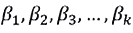中仍然是线性的。
在回顾北京 PM2.5 的例子之前，让我们先了解一下多项式回归是如何使用我们在线性回归部分介绍的二次方程的模拟数据进行的。
练习 55:使用 runif()函数执行均匀分布
在本练习中，我们将使用 R 中的函数runif()从均匀分布中生成 50 个随机数，并将结果存储在uniform_random_x中。我们已经定义了一个函数来使用前面的二次方程生成值。注意，我们将单独给函数返回的值加上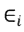；使用 r 中的rnorm()函数从正态分布中生成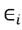，最终值将存储在quadratic_values_y中:
- 首先，定义如下命令所示的二次方程:
quadratic_function <- function(x){return (5+(12*x)-(3*(x^2)))} - 现在，生成
x:uniform_random_x <- runif(50, min=0, max=15)
的统一随机数 - 在二次方程中加入误差项，误差项呈正态分布，均值
0，方差2( 标准差(sd) =方差的平方根 ):quadratic_values_y <- quadratic_function(uniform_random_x) + rnorm(50,mean = 0, sd =sqrt(2))
- 为了将数据存储在数据框中，我们使用下面的命令:
df <- data.frame(quadratic_values_y,uniform_random_x)
- Now, plot the relationship between
xandybased on the quadratic equation:library(ggplot2) ggplot(df, aes(x=uniform_random_x,y=quadratic_values_y))+ geom_point()
输出如下所示:
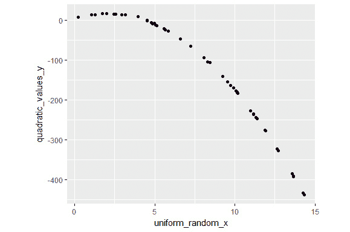图 4.10:使用函数 runif()执行均匀分布
下图清楚地显示了
uniform_random_x和quadratic_values_y之间的关系并不像预期的那样是线性的。现在，如果我们试图拟合一个线性模型，我们预计会在诊断图中看到一些问题。图 4.12 中的残差与拟合值图显示了一个曲率，它们并没有像我们之前看到的那样表现出均匀的随机性。另外，正态概率图 ( NPP )似乎偏离了直线，在遥远的百分位数处向下弯曲。这些图表明所使用的模型有问题，并表明可能需要更高阶的模型。

图 4.11:该图显示了均匀生成的随机数(x)和二次方程中 x 的值之间的非线性关系
- Now, fit a linear regression model to the polynomial (quadratic) equation and display the diagnostic plot:
par(mfrow = c(2,2)) plot(lm(quadratic_values_y~uniform_random_x,data=df))
输出如下所示:
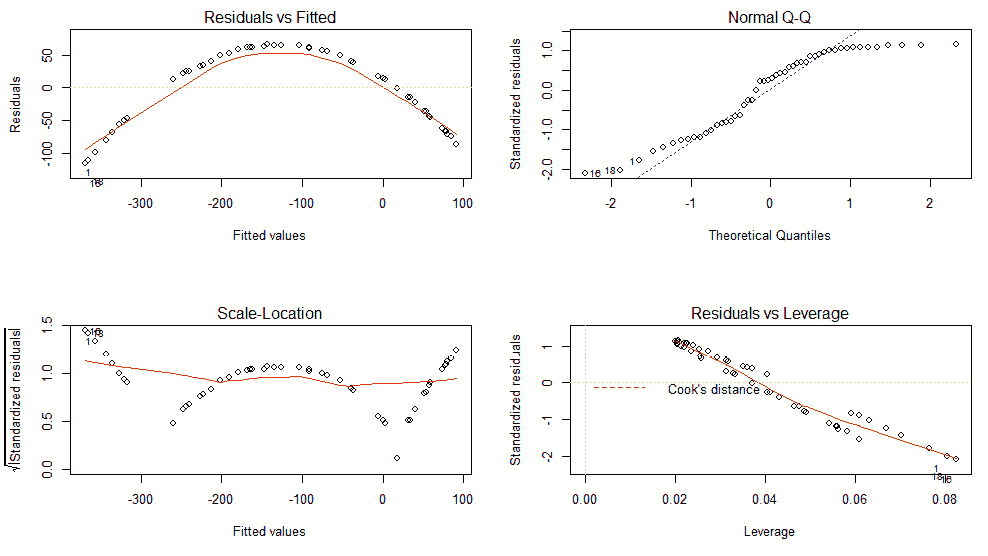图 4.12:使用 lm()方法拟合二次方程数据的诊断图
现在，让我们看看多项式回归在北京 PM2.5 数据集上的表现。我们引入了一个额外的二次项
DEWP^2，它就是DEWP的 T2 次方。请参考第 3 章、监督学习介绍的图 3.5 中所示的散点图，以证明添加此类高阶项的合理性。 - 对北京 PM2.5 数据集使用多项式回归，其中包含二次项和三次项:
multiple_PM25_poly_model <- lm(pm2.5 ~ DEWP^2 + TEMP + Iws + DEWP*TEMP*month, data = PM25)
- To print the model summary, use the following command:
summary(multiple_PM25_poly_model)
输出如下所示:
## Residuals: ## Min 1Q Median 3Q Max ## -298.41 -42.77 -9.35 30.91 967.39 ## ## Coefficients: ## Estimate Std. Error t value Pr(>|t|) ## (Intercept) 2.917e+02 4.338e+00 67.257 < 2e-16 *** ## DEWP 1.190e+01 2.539e-01 46.879 < 2e-16 *** ## TEMP -9.830e+00 8.806e-01 -11.164 < 2e-16 *** ## Iws -1.388e-01 7.707e-03 -18.009 < 2e-16 *** ## month2 -2.388e+01 5.011e+00 -4.766 1.89e-06 *** ## month3 -1.228e+02 5.165e+00 -23.780 < 2e-16 *** ## DEWP:TEMP:month9 4.455e-01 6.552e-02 6.800 1.06e-11 *** ## DEWP:TEMP:month10 5.066e-01 5.862e-02 8.642 < 2e-16 *** ## DEWP:TEMP:month11 5.111e-02 5.526e-02 0.925 0.35500 ## DEWP:TEMP:month12 1.492e-01 6.599e-02 2.261 0.02375 * ## --- ## Signif. codes: 0 '***' 0.001 '**' 0.01 '*' 0.05 '.' 0.1 ' ' 1 ## ## Residual standard error: 70.04 on 41708 degrees of freedom ## (2067 observations deleted due to missingness) ## Multiple R-squared: 0.4217, Adjusted R-squared: 0.4211 ## F-statistic: 633.7 on 48 and 41708 DF, p-value: < 2.2e-16
请注意，尽管增加了一个二次项，我们并没有获得比线性模型更好的 R 平方值。此时，我们可以得出结论，PM2.5 预测需要一个更好的独立变量，它可以解释其中的方差，以使 R 平方值达到任何更高的水平。诊断图似乎显示了类似的解释。
- Plot the diagnostics plot using the following command:
par(mfrow = c(2,2)) plot(multiple_PM25_poly_model)
输出如下所示:
图 4.13:多项式回归模型拟合北京 PM2.5 数据集的诊断图
岭回归
正如我们在线性回归中看到的，普通最小二乘 ( OLS )以残差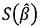的平方和最小化的方式估计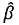的值。
由于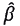是我们根据给定样本计算的估计值，而不是真实总体参数，我们需要小心估计值的某些特征。这两个主要特征是偏差和方差。
如果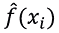是对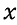的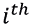值的拟合，那么测试数据集上的平均值(或预期值)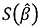可以分解为三个量，方差、偏差平方和误差项的方差，如下式所示:
对于最佳估计，诸如 OLS 的合适算法应该同时实现低偏差和低方差。我们通常称之为偏差-方差权衡。下图中常见的靶心图有助于理解权衡的各种情况:
图 4.14:解释偏差和方差情景的流行牛眼图
靶心代表了 OLS 试图估计的真实人口值，而靶心是我们从四个不同的估计者那里得到的估计值。这些大致分为以下几类:
- 低偏差和低方差(最有利)
- 低偏差和高方差
- 高偏差和低方差
- 高偏差和高方差(最不利)
OLS 方法将所有变量视为可能性相等，因此具有低偏差(导致训练期间欠拟合)和高方差(导致测试数据中预测误差)如图图 4.11 所示。这种行为对于获得最佳的模型复杂性来说并不理想。这个问题的一般解决方案是以引入一些偏差为代价来减少方差。这种方法被称为正则化。因此，岭回归可以被认为是线性回归的扩展，增加了一个正则项。
多元线性回归的一般形式可以表示如下:
其中， argmin 表示使函数达到最小值的βs 的最小值。在上下文中，它找到最小化 RSS 的β。β受到以下限制:
正则项-L2 范数
如果 RSS 增加，脊β中的罚项也会增加。下图显示了模型复杂度(预测器数量)和误差之间的关系。它表明，当预测器数量增加(模型复杂性增加)时，方差上升，偏差下降。
OLS 估计找到了一个正确的位置，远离了最佳的权衡点。这种情况需要引入正则项，因此岭回归成为模型的合适选择:
图 4.15:偏差与方差
岭回归的 OLS 损失函数可由以下等式表示:
用正则项最小化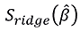函数，给出岭回归估计。这个损失函数有趣的性质是，随着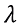变大，方差减小，偏差增大。
练习 56:北京 PM2.5 数据集的岭回归
本练习对北京 PM2.5 数据集进行岭回归拟合。我们将使用glmnet库的交叉验证函数cv.glmnet()和参数alpha = 0以及不同的λ值。目的是获得 lambda 的最佳值，该值将在函数输出的lambda.min属性中返回。
让我们执行以下步骤来完成练习:
- 加载
glmnet库并预处理 PM25 数据帧:library(glmnet) PM25 <- na.omit(PM25) X <- as.matrix(PM25[,c("DEWP","TEMP","Iws")]) Y <- PM25$pm2.5 - 现在，让我们使用下面的代码来设置
seed以获得类似的结果:set.seed(100) model_ridge = cv.glmnet(X,Y,alpha = 0,lambda = 10^seq(4,-1,-0.1))
- 要在交叉验证后找到 lambda 的最佳值，请执行以下命令:
optimal_lambda <- model_ridge$lambda.min
- Coefficient values from the model fit:
ridge_coefficients <- predict(model_ridge, s = optimal_lambda, type = "coefficients") ridge_coefficients
输出如下所示:
## 4 x 1 sparse Matrix of class "dgCMatrix" ## 1 ## (Intercept) 160.7120263 ## DEWP 4.3462480 ## TEMP -5.0902943 ## Iws -0.2756095
- Use the
predictfunction again and pass the matrix X to thenewxparameter:ridge_prediction <- predict(model_ridge, s = optimal_lambda, newx = X) head(ridge_prediction)
输出如下所示:
1 25 111.0399 26 115.1408 27 137.3708 28 154.2625 29 154.0172 30 158.8622
我们看到如何使用glmnet库使用岭回归来拟合北京 PM2.5 数据集。
拉索回归
最小绝对收缩和选择算子 ( 拉索)遵循与岭回归相似的结构，除了惩罚项，在拉索回归中，惩罚项是 L1(系数估计值的绝对值之和)，而在岭回归中是 L2(系数平方和):
套索回归将一些系数变为零，因此特定变量的影响被抵消。这使得它在拟合数据时在特征选择方面是有效的。
练习 57:套索回归
在本练习中，我们将对北京 PM2.5 数据集应用 LASSO 回归。我们将使用相同的cv.glmnet()函数来寻找最佳λ值。
执行以下步骤来完成练习:
- 首先，让我们使用下面的命令设置
seed来获得类似的结果:set.seed(100) #Setting the seed to get similar results. model_LASSO = cv.glmnet(X,Y,alpha = 1,lambda = 10^seq(4,-1,-0.1))
- 现在，使用下面的命令在交叉验证后找到 lambda 的最优值:
optimal_lambda_LASSO <- model_LASSO$lambda.min
- Execute the following command to find the coefficient values from the model fit:
LASSO_coefficients <- predict(model_LASSO, s = optimal_lambda_LASSO, type = "coefficients") LASSO_coefficients
输出如下所示:
## 4 x 1 sparse Matrix of class "dgCMatrix" ## 1 ## (Intercept) 160.4765008 ## DEWP 4.3324461 ## TEMP -5.0725046 ## Iws -0.2739729
- Use the following command to find the prediction from the model:
LASSO_prediction <- predict(model_LASSO, s = optimal_lambda_LASSO, newx = X) head(LASSO_prediction)
输出如下所示:
1 25 110.9570 26 115.0456 27 137.2040 28 154.0434 29 153.7996 30 158.6282
观察岭和套索回归预测的相似性。北京 PM2.5 数据集没有显示这两种方法有任何差异。
弹性网回归
弹性网结合了岭回归和套索回归的罚项，避免变量选择对数据的过度依赖(系数值趋于零，高度相关的变量被抑制)。弹性网使以下损失函数最小化:
其中参数α控制脊线和套索之间的正确混合。
总之，如果模型有许多预测变量或相关变量，引入正则化项有助于最佳地减少方差和增加偏差，从而带来模型复杂性和误差的正确平衡。图 4.16 提供了一个流程图，帮助人们在多重回归、脊回归、套索回归和弹性网回归之间进行选择:
图 4.16:在多重、脊形、套索和弹性网回归之间进行选择的选择标准
练习 58:弹性网回归
在本练习中，我们将对北京 PM2.5 数据集执行弹性净回归。
执行以下步骤来完成练习:
- 让我们首先使用下面的命令设置
seed来获得类似的结果:set.seed(100) model_elanet = cv.glmnet(X,Y,alpha = 0.5,lambda = 10^seq(4,-1,-0.1))
- 现在，使用下面的命令在交叉验证后找到 lambda 的最优值:
optimal_lambda_elanet <- model_LASSO$lambda.min
- Next, execute the following command to find the coefficient values from the model fit:
elanet_coefficients <- predict(model_elanet, s = optimal_lambda_elanet, type = "coefficients") elanet_coefficients
输出如下所示:
## 4 x 1 sparse Matrix of class "dgCMatrix" ## 1 ## (Intercept) 160.5950551 ## DEWP 4.3393969 ## TEMP -5.0814722 ## Iws -0.2747902
- Use the following command to find the prediction from the model:
elanet_prediction <- predict(model_elanet, s = optimal_lambda_elanet, newx = X)
输出如下所示:
25 110.9987 26 115.0936 27 137.2880 28 154.1538 29 153.9092 30 158.7461
弹性网回归给出了或多或少与岭和套索回归相同的预测。在下一节中，我们将对这三者进行比较。
系数和剩余标准误差之间的比较
下表显示了DEWP、TEMP和Iws的比较，这些值没有太大的差异，这表明带有正则项的岭回归、套索回归和弹性网回归并不比多元线性回归方法好。这也表明DEWP、TEMP和Iws是相关性低或无相关性的独立变量:
图 4.17:线性回归、岭回归、套索回归和弹性网回归之间的剩余标准误差比较
下图显示了使用线性回归、岭回归、套索回归和弹性网回归对截距、DEWP、温度和 Iws 变量的系数值进行的比较:
图 4.18:线性回归、岭回归、套索回归和弹性网回归之间的系数值比较
练习 59:计算线性回归、岭回归、套索回归和弹性网回归的 RSE
在本练习中，我们将计算线性回归、岭回归、套索回归和弹性网回归的 RSE。
执行以下步骤来完成练习:
- 使用下面的代码，用
Iws、DEWP和TEMP变量:multiple_PM25_linear_model <- lm(pm2.5 ~ Iws + DEWP + TEMP, data = PM25)
拟合一个线性模型 - Now, use the following command for finding the Residual Standard Error (RSE) of linear regression:
sqrt(sum(multiple_PM25_linear_model$residuals^2)/41753)
输出如下所示:
## [1] 81.51
同样，我们将找到剩余回归的 RSE。
- RSE of ridge regression:
sqrt(sum((Y-ridge_prediction)^2)/41753)
输出如下所示:
## [1] 81.51059
- RSE of LASSO regression:
sqrt(sum((Y-LASSO_prediction)^2)/41753)
输出如下所示:
## [1] 81.51123
- RSE of Elastic Net regression:
sqrt(sum((Y-elanet_prediction)^2)/41753)
输出如下所示:
## [1] 81.51087
这表明三者的 RSE 没有显著的不同。
泊松回归
在线性回归中，我们看到了以下形式的方程:
在Y中是一个计数或速率(Y/t)，它具有一个泊松分布，期望(平均)计数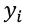为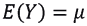，等于方差。
在逻辑回归的情况下，我们将寻找能够最大化对数似然的值，以获得系数的最大似然估计量 ( 最大似然估计量)。
没有封闭形式的解，因此最大似然估计将使用迭代算法获得，例如牛顿-拉夫森和迭代加权最小二乘法 ( IRWLS )。
泊松回归适用于计数相关变量，它必须满足以下准则:
- 它遵循泊松分布
- 计数不是负数
- Values are whole numbers (no fractions)
注意
这里用来演示泊松回归的数据集来自于 A. Colin Cameron 和 Per Johansson 的《使用级数展开的计数数据回归:与应用》，应用计量经济学杂志，第 12 卷，第 3 期，1997 年，第 203-224 页。
下表简要描述了这些变量:
图 4.19:来自澳大利亚健康调查数据集的变量及其描述
注意
博客http://www.econ.uiuc.edu/~econ508/Stata/e-ta16_Stata.html展示了数据集的用法。
练习 60:执行泊松回归
在本练习中，我们将对数据集执行泊松回归。
执行以下步骤来完成练习:
- 进行泊松回归加载库
foreign读取dta数据:library(foreign)
- 使用
foreign库中的read.data函数读取澳大利亚健康调查数据集:df_health <- read.dta("health.dta") - 使用
glm()函数拟合广义线性模型，将泊松回归作为族参数:poisson_regression_health <- glm(NONDOCCO ~ ., data = df_health, family=poisson(link=log))
中的值 - Print the summary of the model:
summary(poisson_regression_health)
输出如下所示:
## Coefficients:## Estimate Std. Error z value Pr(>|z|) ## (Intercept) -3.116128 0.137763 -22.620 < 2e-16 *** ## SEX 0.336123 0.069605 4.829 1.37e-06 *** ## AGE 0.782335 0.200369 3.904 9.44e-05 *** ## INCOME -0.123275 0.107720 -1.144 0.252459 ## LEVYPLUS 0.302185 0.097209 3.109 0.001880 ** ## FREEPOOR 0.009547 0.210991 0.045 0.963910 ## FREEREPA 0.446621 0.114681 3.894 9.84e-05 *** ## ILLNESS 0.058322 0.021474 2.716 0.006610 ** ## ACTDAYS 0.098894 0.006095 16.226 < 2e-16 *** ## HSCORE 0.041925 0.011613 3.610 0.000306 *** ## CHCOND1 0.496751 0.086645 5.733 9.86e-09 *** ## CHCOND2 1.029310 0.097262 10.583 < 2e-16 *** ## --- ## Signif. codes: 0 '***' 0.001 '**' 0.01 '*' 0.05 '.' 0.1 ' ' 1 ## ## (Dispersion parameter for poisson family taken to be 1) ## ## Null deviance: 6127.9 on 5189 degrees of freedom ## Residual deviance: 5052.5 on 5178 degrees of freedom ## AIC: 6254.3 ## ## Number of Fisher Scoring iterations: 7
- 加载
ggplot2库:library(ggplot2)
- 结合
NONDOCCO的实际值和NONDOCCO的泊松回归拟合值:df_pred_actual <- data.frame(cbind(df_health$NONDOCCO,poisson_regression_health$fitted.values))
- 命名列:
colnames(df_pred_actual) <- c("actual_NONDOCCO","predicted_NONDOCCO") - Plot the actual versus predicted values of the
NONDOCCOtarget variable:ggplot(df_pred_actual, aes(x=actual_NONDOCCO, y =predicted_NONDOCCO))+ geom_point()
输出图如下所示:
图 4.20:比较 NONDOCCO 的实际值和预测值
给定具有 5178 个自由度的剩余偏差统计值 5052.5，p 值为零，并且 5052.5/5178 = 0.975 小于 1，因此模型在一定程度上确实如此。我们还可以检查过度分散性(数据集中存在的可变性大于基于给定统计模型的预期值)。通过用sample_variance除以sample_mean来计算过度离差。让我们来检查下面的练习。
练习 61:计算过度离差
在本练习中，我们将对数据集执行计算过度分散。
执行以下步骤来完成练习:
- First, let's find the sample mean using the following command:
s_mean <- mean(df_health$NONDOCCO) s_mean
输出如下所示:
## [1] 0.2146435
- Now, use the following command for finding the sample variance:
s_variance <- var(df_health$NONDOCCO) s_variance
输出如下所示:
## [1] 0.931757
- Similarly, overdispersion can be computed using the following command:
s_variance/s_mean
输出如下所示:
## [1] 4.34095
因此，即使我们尝试在模型拟合中加入预测变量，过度离差也会开始下降。在我们的例子中，离差在一定范围内。
- Now, let's calculate the dispersion using the following command:
summary.glm(poisson_regression_health)$dispersion
输出如下所示:
## [1] 1
然而，在离差超过极限的情况下，高阶泊松回归是合适的解决方案。考虑到这本书的范围，我们不会在这里详细探究这种模型。感兴趣的读者可以阅读更多关于基线密度泊松(p 阶泊松多项式 ( PPp 模型)。
Cox 比例风险回归模型
Cox 回归模型的基础来自生存分析，这是一组有助于调查事件发生所需时间的统计方法。一些例子如下:
- 销售线索转化为销售额的时间
- 从开始使用到产品出现故障的时间
- 从投保开始到死亡的时间
- 诊断后至死亡的时间
- 产品保修索赔前的时间
- 从客户注册开始的时间
所有这些例子都是生存分析的一些用例。在大多数生存分析中，有三种广泛使用的方法用于进行这种时间-事件分析:
- 用于分析不同组的 Kaplan-Meier 生存曲线
- 比较两条或多条生存曲线的对数秩检验
- Cox 比例风险回归描述变量对生存率的影响
记住本章和本书的范围，我们将只关注 Cox 比例风险回归。基本思想是，前两种方法仅帮助进行单变量分析，换句话说，您可以了解仅一个因素对事件发生时间的影响，而 Cox 回归有助于评估多个因素对生存时间的影响。此外，Cox 回归同样适用于分类因素和数字因素，而前两种方法仅适用于分类因素。
Cox 模型由表示为h(t)的风险函数表示，该函数在医学研究中主要用于表示在时间t死亡的风险:

从这个等式中可以观察到以下一些情况:
t表示存活时间。h(t)代表由p协变量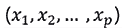确定的危险函数。协变量是用于描述生存分析中预测变量的术语。- 系数表明协变量的影响。
- 术语被称为时间 t 的基线风险。如果所有系数都为零，成为风险函数值。
这个函数看起来与逻辑回归有点关系(使用指数项)，这将在第 5 章、分类中详细讨论。我们已经在逻辑上将本书中讨论的所有监督学习算法分为yes/no、1/0)，但不考虑事件的时间。
正如您可能已经从风险函数中观察到的，生存模型包括:
- 指示事件发生时间的连续变量
- 说明事件是否发生的状态的二进制变量
NCCTG 肺癌数据
NCCTG 肺癌数据来自晚期肺癌患者的生存期，来自北中部癌症治疗组。这些数据是一些元数据的集合，比如哪个机构收集的、患者的年龄、性别等等。该数据集中的表现得分评定了患者在日常活动中的表现。任何生存分析数据集中最重要的变量是关于事件发生时间的知识，例如，直到死亡的时间。
生存分析通常被定义为一套检查数据的方法，其中结果变量是感兴趣的事件发生前的时间。
图 4.21:中北部癌症治疗组的变量及其描述
在下一个练习中，我们将学习如何使用survival包中的方法Surv创建生存对象。请注意，在添加生存对象后的数据集摘要中，创建了两个额外的变量SurvObject.time和SurvObject.status，它们存储了关于事件发生时间(死亡前的时间)的信息，该信息随后成为 Cox 比例风险回归模型的因变量。
当一个病人的生存时间的指征数量很少时，观察结果会被删截。一般来说，最普遍的形式是权利审查。让我们假设我们正在跟踪一项为期 20 周的研究。在研究期间未经历感兴趣事件的患者可被称为右删截患者。此人的存活时间至少是研究的持续时间；在这种情况下，20 周。
练习 62:使用 Cox 回归分析探索 NCCTG 肺癌数据
在本练习中，我们将使用 Cox-Regression 分析 NCCTG 肺癌数据。
执行以下步骤来完成练习:
- 导入
survival库:library(survival)
- 导入肺癌数据:
df_lung_cancer <- lung
- Print the dataset using the
headfunction:head(df_lung_cancer)
输出如下所示:
## inst time status age sex ph.ecog ph.karno pat.karno meal.cal wt.loss ## 1 3 306 2 74 1 1 90 100 1175 NA ## 2 3 455 2 68 1 0 90 90 1225 15 ## 3 3 1010 1 56 1 0 90 90 NA 15 ## 4 5 210 2 57 1 1 90 60 1150 11 ## 5 1 883 2 60 1 0 100 90 NA 0 ## 6 12 1022 1 74 1 1 50 80 513 0
status == 2代表死亡的肺癌数据:df_lung_cancer$SurvObject <- with(df_lung_cancer, Surv(time, status == 2))
- Find the Cox Proportional Hazards Regression model:
cox_regression <- coxph(SurvObject ~ age + sex + ph.karno + wt.loss, data = df_lung_cancer) cox_regression
输出如下所示:
## Call: ## coxph(formula = SurvObject ~ age + sex + ph.karno + wt.loss, ## data = df_lung_cancer) ## ## ## coef exp(coef) se(coef) z p ## age 0.01514 1.01525 0.00984 1.54 0.1238 ## sex -0.51396 0.59813 0.17441 -2.95 0.0032 ## ph.karno -0.01287 0.98721 0.00618 -2.08 0.0374 ## wt.loss -0.00225 0.99776 0.00636 -0.35 0.7239 ## ## Likelihood ratio test=18.8 on 4 df, p=0.000844 ## n= 214, number of events= 152 ## (14 observations deleted due to missingness)
本练习使用生存库演示 Cox 比例风险回归模型。
总结
在本章中，我们在前一章简要介绍之后，更详细地讨论了线性回归。当然，对线性回归的讨论导致了一系列的诊断，为讨论其他类型的回归算法提供了方向。分位数、多项式、岭、套索和弹性网，所有这些都是从线性回归中派生出来的，不同之处在于这些算法都有助于克服线性回归中的一些限制。Poisson 和 Cox 比例风险回归模型是回归算法的一个特例，它们分别处理计数和事件发生时间因变量，而不像其他模型那样处理任何数量因变量。
在下一章，我们将探索第二个最常用的机器学习算法，并解决与之相关的问题。您还将详细了解有关分类的更多信息。第 5 章、分类与本章类似，旨在详细涵盖从决策树到深度神经网络的分类算法。